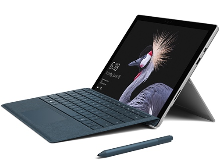
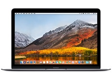
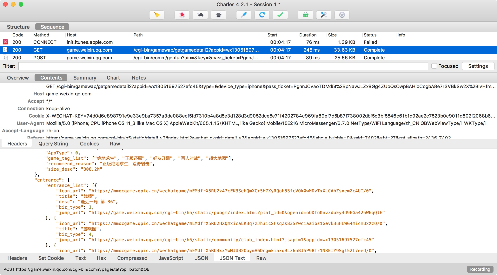

关于12' MacBook使用的记录
选择MacBook的原因
背景
2017年底的时候因为爱人在老家待产，实在受不了背着沉重的2015版15寸MacBook Pro两头跑，所以打算买一台轻便的电脑。
使用场景分析
可能是因为做了太久运维，养成了背着电脑出门的习惯，哪怕是去KTV或者去逛街都要背上电脑才觉得心安，这样有紧急问题时可以随时打开电脑和手机热点上线处理。现在不做运维好几年了，但是这个毛病还是改不掉了。
目前的工作中使用电脑的主要场景就是通过SecureCRT管理云服务器，用PyCharm写python的脚本或者web网站，本地需要搭建MySQL和Redis的服务做开发环境，偶尔看看Java项目的代码，但本地不会编译和运行。游戏从来也不玩，电影最多只用腾讯视频看看在线的。也就是说我对电脑性能的要求其实并不高，准确的说是非常低，而且本身就有一台15寸的MacBook Pro，可以在需要性能的时候使用。
所以这次买新电脑的主要的目标就是极致轻薄。
选择
当时有三个选择：Surface Pro 4、iPad Pro和MacBook，经过对比分析后，最终在一次喝得快醉的时候入手了MacBook。下面说一下从我的角度对这三台设备的分析，性能参数什么的我就不罗列了，直接说要点。
申明以下内容只是从我的经验和结合我的实际需求来分析，不喜勿喷
1. Surface Pro 4

微软在笔记本领域经过前面几代Surface的大胆尝试之后，推出的性能和工业水平都非常高的产品。
对我来说有以下几个优点：
- Windows系统支持的软件广，虽说OSX平台上这些年软件也越来越多，但是还是无法和windows的软件生态比。
- 接口齐全，支持usb和sd卡。
- 支持平板和笔记本两种形态，不工作时候把键盘拆掉就可以当平板玩，玩游戏和看电影比较爽。
对我来说有几个不足和疑虑：
- 和已有的MacBook Pro文件同步不方便。键盘使用习惯也不同，比如复制操作 windows上用的是Control+C，而mac上用的是Command+C，如果两台混用估计会有大量的误操作。
- 因为osx和linux的相似性，在项目中广泛使用了环境变量来定义环境或者特殊变量，在一些脚本中会直接引用awk等命令，如果切换到windows上会非常不方便本地测试。
- 从论坛上还有以前的领导的使用经验来看，Surface存在无缘无故蓝屏的硬伤，原因未知。领导说换个输入法会好一些，但我不解，为什么输入法会导致电脑蓝屏。
2. iPad Pro
apple一直想进一步占有生产力工具的份额，iPad Pro是娱乐工龄和生产力工具的混合体，有10.5寸和12.9寸两个选择，在酷动都体验过。
优点
- 办公娱乐两不误， 前面说平板模式下的娱乐体验肯定比Surface强，因为ios平台下的游戏数量和质量比Surface多太多了（指可以触屏玩的游戏）。
- 可以通过iCloud与MBP进行文件同步。
- 已经有IDE和SSH工具来对应我的办公使用场景。
- 够轻，够逼格。
不足
- debug代码不方便，虽然可以通过git将代码上传到云服务器上进行debug，但是这种操作肯定太不方便了。
- 没有鼠标，一边敲键盘一边还要伸手去屏幕上去点来点去的，体验非常差。
3. MacBook

我买的时候apple称其为 New MacBook，主要是相对于第一代产品来说的。我看了一下，网上对它的诟病主要有以下两个点
第一代的CPU性能确实不行，虽然New MacBook对CPU进行了升级，但是很多人还是不敢尝试的。
只有一个USB-C接口和一个3.5耳机接口，一定要买一个转换器才能满足基本的办公需要，而官方的转换器又超级贵。
对我的使用场景来说，它有以下几个优点：
- 性能其实是够用的，SecureCRT非常省资源，PyCharm可能会难一点，但是可以用Sublime进行替代，问题不大。
- 我日常仅需要一个hdmi接口带显示器，移动硬盘和U盘基本不用，所以只需要花一百多去小米买一根转接头就可以解决接口少的问题了。
- 轻：iPad和surface说很轻，但是键盘的重量加上之后就不一定比MacBook轻了。
- 与MBP的环境和使用习惯完全一致，不存在使用障碍。
性能实测
1、40个worker并发爬虫
在做 用 Python 分析了 20 万场吃鸡数据 分析时，在单机上开了30个并发去抓取腾讯游戏的数据， 从flower中拿到的TPS性能图如下：
可以看出峰值可以超过200，而且在整个爬取过程中，在PyCharm中操作丝毫不会觉得卡。
后续我想了一下，因为我用的是wifi，可能wifi的带宽瓶颈才是限制TPS的主要原因。
2、日常工作场景
在日常工作时我经常会同时打开以下APP：
- 2-3个PyCharm
- 一个Chrome进程，5-6个tab
- Sublime
- QQ、WeiXin
- SecureCRT
- MySQL服务
- Redis服务
- FileZilla
- 酸酸乳
以上同时打开，工作依然丝般顺滑。
3、Selenium + 15个Chrome并发任务
有一次有一个临时任务，需要通过浏览器去登陆不同的用户进行业务操作，使用Selenium同时打开20个Chrome进程进行操作的时候，系统开始觉得有些吃力了。可能Chrome太占内存了。用15个并发的时候就觉得还好了。
所以MacBook的性能对日常工作来说完全是够用的，普通的文档工作，简单上上网什么的更不用说了。
常用软件推荐
1、MWeb 专业的 Markdown 写作、记笔记、静态博客生成软件
差不多是我惟一在AppStore上买的付费软件了，虽然有破解版，但是我觉得优秀的国产软件还是要支持的。
本文就是使用MWeb写成的，最特色的功能点介绍：
- MarkDown优秀的解析和渲染
- 图片直接cmd+v就可以复制进文档
- 可以一键生成静态站点，可增加自定义模版代码接入统计和评论功能
- 可以把MarkDown文件导出成html、pdf、doc等格式
2、SecureCRT 专业的 Markdown 写作
SecureCRT 最专业的SSH工具之一，很早以前就开始用了，最特色的功能就是可以同时向所有打开的SSH窗口发送命令实现批量操作。

3、Charles 协议层代理抓包工具
Charles 的功能和Windows下的Fiddler相似，可以通过代理服务方式将协议层的信息抓出来，方便定位问题。
在做 用 Python 分析了 20 万场吃鸡数据 分析时，就使用Charles抓取了手机的流量进行接口分析。
